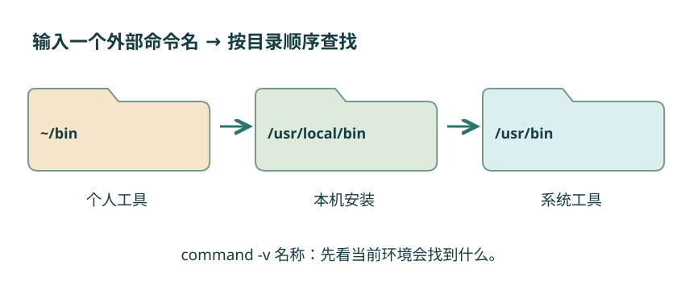

第 14 节 · 让程序为你工作
命令从哪里来
明明有一个程序，为什么仍然提示找不到？
理解 PATH、command -v 与 ./；区分程序安装和启用环境。
本节目录
一个命令名，怎样找到一个程序
起始位置是 ~/linux-lab。输入 ls 时没有写完整路径，Shell 怎么知道去哪里找？对外部程序，PATH 列出一组搜索目录，通常以冒号分隔。Shell 还会处理别名、函数和内建命令，所以不能把所有命令都简单理解成 PATH 中的文件。
command -v ls
command -v bashcommand -v 告诉你当前 Shell 会如何识别这个名字。返回路径因环境而异；cd 这样的内建命令可能直接返回命令名。
图解 · 沿 PATH 寻找外部程序

Shell 按搜索顺序查找外部命令；前面的目录可能遮住后面的同名程序。示意不包含别名、函数和内建命令等其他处理。
放大查看 ↗ 保存 SVG ↓当前目录不一定在搜索路线中
材料中的 tools/hello.sh 是一个很小的 Bash 程序，内容只会输出 hello。先给自己执行权限，再通过路径运行：
chmod u+x tools/hello.sh
./tools/hello.shhello
./ 指明从当前目录出发。不给路径、只输入 hello.sh，通常不会自动搜索当前目录。也可以运行 bash tools/hello.sh，明确让 Bash 读取脚本；这需要文件可读，不要求脚本本身具有执行位。
环境变量是程序启动时带上的设置
环境变量可以把设置传给后续启动的程序。查看 PATH 可以用 printf '%s\n' "$PATH"。这里 $PATH 是读取变量，双引号保护展开后的整体内容；变量在第 16 节继续讲。
常见的个人工具目录是 ~/bin。需要时可以在当前终端尝试 export PATH="$HOME/bin:$PATH"，把它放在已有搜索路径前面。不要用一个新目录直接覆盖全部 PATH。永久配置涉及 Bash 启动文件，先在临时会话验证，再按附录阅读 .bashrc 的说明。
安装软件：先选对管理它的人
Ubuntu 的软件包可以由系统包管理器安装。自己的 Ubuntu 环境若缺少 nano，可先运行 sudo apt update 更新包索引，再运行 sudo apt install nano。这些操作需要网络、磁盘空间和管理员授权；它们只属于环境准备，不会在打开教材或构建网页时自动执行。
apt update 更新索引，不等于已经升级所有软件。没有管理权限的服务器不能照搬这一路线。需要用户级环境时，再看附录中的 Conda 基础。
GNU 工具、Linux 内核和发行版来自不同项目。发行版与包管理器把这些部件组织在一起，因此“软件已经安装”和“当前 Shell 找到了哪一份软件”也需要分别确认。
动手试试
安装位置与工作位置
切换到 notes 后，再输入 command -v ls。ls 的程序位置是否因为工作目录改变而变化？随后回到 linux-lab。
给我一点提示
区分“我要处理的文件在哪里”和“执行工具本身在哪里”。
查看参考解法与解释
在没有其他配置变化时，ls 通常仍指向同一程序；工作目录改变的是相对路径的起点，不会自动把系统工具移动到 notes。
检查一下理解
当前目录有 hello.sh，为什么常用 ./hello.sh？
查看解释
./ 指明路径；仅输入程序名通常按 Shell 的查找规则寻找，其中外部程序会在 PATH 中查找。